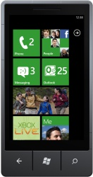

First Windows Phone 7 Games Announced, Xbox Titles Included
At Gamescom 2010, Microsoft announced the first wave of Xbox LIVE game titles coming to Windows Phone 7 this holiday.
By Microsoft Corporation, Published 16th August 2010
REDMOND, Wash. – Aug. 16, 2010 Months before the launch of Windows Phone 7, Microsoft is offering a glimpse of a mobile gaming
experience that aims to stand apart.
Today at Gamescom 2010, the world's largest gaming conference underway in Cologne, Germany, Microsoft announced the first wave of video games that will be available for Windows Phone 7 at launch or shortly after. The first 50 titles - a mix of new and familiar games that target both the casual and hardcore gamer - are just a sampling of what will ship this holiday, said Kevin Unangst, senior director of PC and mobile gaming. But the list conveys the wide range of video games that will be available on Windows Phone 7.
The company also announced that its Windows Phone 7 games will be closely linked with Xbox LIVE, and said that gamers will be able to extend the experience of some of their favorite console franchises to the phone.
"We're really approaching this as we would a console, so we have to deliver the breadth of games and the quality people expect from Xbox," Unangst said. He said that's why starting out with a strong portfolio of games is so important. "To have this quantity and quality of games committed this far ahead of launch, with even more to come, is a statement of support that says Windows Phone 7 will be a big success," he said.
Among the first titles are familiar casual games like "Bejeweled" and "Uno" as well as new ones like "Game Chest" - a collection of card and board games. Those games should appeal to the target audience that’s all ready to buy a Windows Phone 7, Unangst said.
Microsoft's mobile gaming portfolio also will appeal to Xbox's millions of gamers, he said. Popular games like "CarneyVale: Showtime" will be ready to play this fall when the phone launches, for example. But going beyond bringing Xbox games over to Windows Phone 7, Microsoft is building mobile experiences that connect with and complement the Xbox 360 experience, Unangst said.
As announced previously, Windows Phone 7 will connect with Xbox LIVE, meaning that mobile users can earn achievements on-the-go, update their avatar and keep track of their gamerscore. At Gamescom, Microsoft announced several familiar Xbox titles that will offer companion experiences on Windows Phone 7. "Halo: Waypoint" an Xbox LIVE hub where Halo fans can go to watch videos and engage with the Halo community, also will be available on the phone, for example. And games like "Crackdown 2: Project Sunburst" will be mobile companion games that offer different gameplay than the console versions, but will be set in the same universe. In addition, hits from Xbox LIVE Arcade like "Rocket Riot" also will make their exclusive mobile debut on Windows Phone 7.
Unangst said the integration of Xbox Live, together with a quality launch lineup, will be what sets Windows Phone 7 apart from its competitors. "Consumers clearly look to gaming as an expected experience on their mobile phone now, and we're going to take that expectation and that delivery up to a different level," he said.
Mobile gaming is rapidly becoming big business. Internal Microsoft research shows that 80 percent of gamers in the US have or will purchase a smartphone this year, and a quarter of what gamers spend on games is spent on mobile gaming. According to research firm In-Stat, mobile gaming is already a billion-dollar industry in the U.S. and will continue to climb.
That's why getting gaming right on the new mobile platform is important to the success of Windows Phone 7, said Greg Sullivan, senior product manager with the Mobile Communications Marketing Group. "Depending on how you measure it, games are one of the biggest application categories in the smartphone space," Sullivan said. "That's one reason we're so excited about the Game hub broadly and the Xbox LIVE integration in particular."
Of course, Windows Phone 7 will have plenty of room for non-Xbox LIVE titles, and consumers can still have a great gaming experience on the phone even if they never plan on owning a console, he added.
Still, because of the Xbox draw, Microsoft expects game developers to take advantage of Windows Phone 7's gaming capacity in a way that extends the Xbox LIVE network and creates powerful new scenarios, Sullivan said. "I think folks are starting to think this through and consider the realm of the possible with gaming when you start to extend the leading gaming network of Xbox LIVE out to potentially millions of mobile devices and you have a platform that lets developers create great experiences that span the Xbox and the phone," he said.
Unangst said he gets questions about how Microsoft will compete with the iPhone and other platforms that have been around for a while. His response is that Microsoft is following the same playbook that worked for Xbox 360 – a laser-focus on great games.
Like it did with its console, Microsoft is actively managing its mobile game portfolio and making sure the best titles will be available on Windows Phone 7. The company is working with third party developers as well as bringing its own resources; Microsoft Game Studios (MGS) now has a dedicated group tasked with extending the best console games onto Windows Phone 7, and delivering all new mobile-specific games.
"We've done this over and over, and we know how to launch a gaming platform," he said. "Starting with the announcement today, we're going to bring a set of high-quality games and experiences to bear at the launch of the Windows Phone 7."